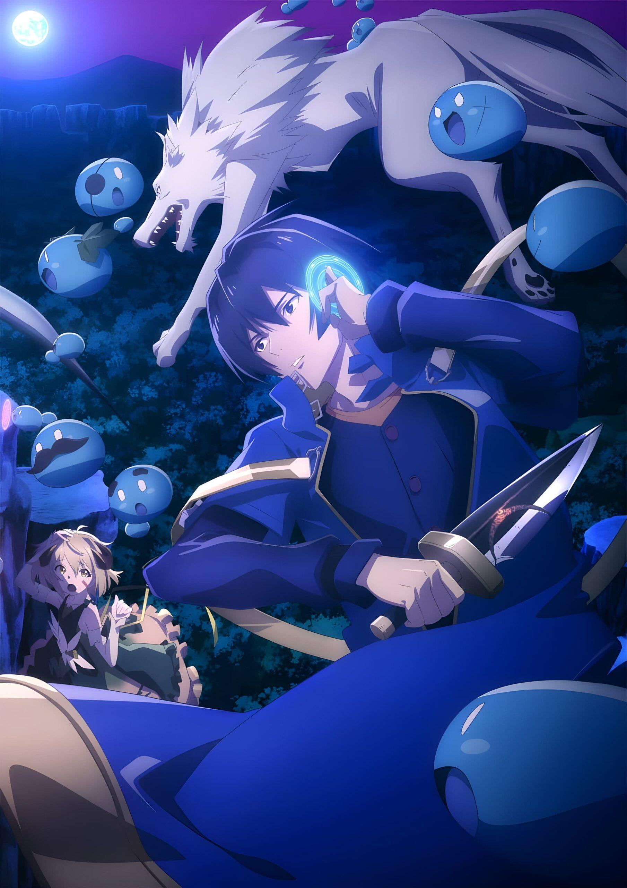

O anime Tensei Kenja no Isekai Life ganha trailer com data de estreia
Por Lucas Luiz De S. Pereira - JUNHO 2, 2022
Os canais oficiais da adaptação de Tensei Kenja no Isekai Life liberaram um novo trailer para a obra.
O trailer traz novos detalhes da história, também foi confirmado que o anime estreará no dia 4 de julho e terá 1 hora de duração. além de dar uma prévia da abertura cantada por Non Stop Rabbit “Mujikaku no Tensai”.
Novo visual da adaptação

Staff
▶ Diretor: Jun Nakagawa (Date A Bullet, High School Fleet)
▶ Adaptação do roteiro: Fumihiko Shimo (Talentless Nana, Musaigen no Phantom World)
▶ Compositor musical: Go Sakabe (Todas as temporadas de Date A Live)
▶ Estúdio: Geek Toys (Date A Bullet, Plunderer)
A light novel foi finalizado no ano passado.
A história acompanha um trabalhador exausto pela rotina difícil de seu emprego. Quando chega em casa após um dia de trabalho, Yuuji Sano encontra em seu computador a mensagem “Você foi convocado para um mundo alternativo!”.
Esté site é um projeto acadêmico para a disciplina PROJETO E MODELAGEM DE SISTEMAS DE SOFTWARE do curso de TECNOLOGIA EM ANÁLISE E DESENVOLVIMENTO DE SISTEMAS da Universidade Nove de Julho, desenvolvido pelo aluno Lucas Luiz de Souza Pereira.
Foi liberado atreveis dos canais oficiais o primeiro trailer da adaptação em anime da 4ª temporada de Date A Live, o próximo arco da obra, será focado na personagem Kurumi. O vídeo traz algumas cenas do anime, dando uma prévia do que podemos esperar.